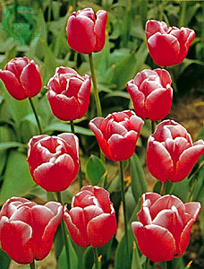
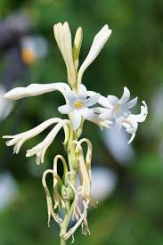

گل لاله

گل لاله در حدود ۱۰۰ تا ۱۵۰ گونه دارد. محل اصلی رویش لالهٔ خود رو در آسیای مرکزی در نظر گرفته میشود
گل رز
رُز، گل سرخ، گل محمدی رده ای از تیرهٔ گل سرخ است که نزدیک به ۱۵۰ گونه دارد
گل مریم

گل مریم گیاهی است چند ساله با گلهای سفید رنگ و خوشبو که عصارهٔ آن در عطر سازی استفاده میشود